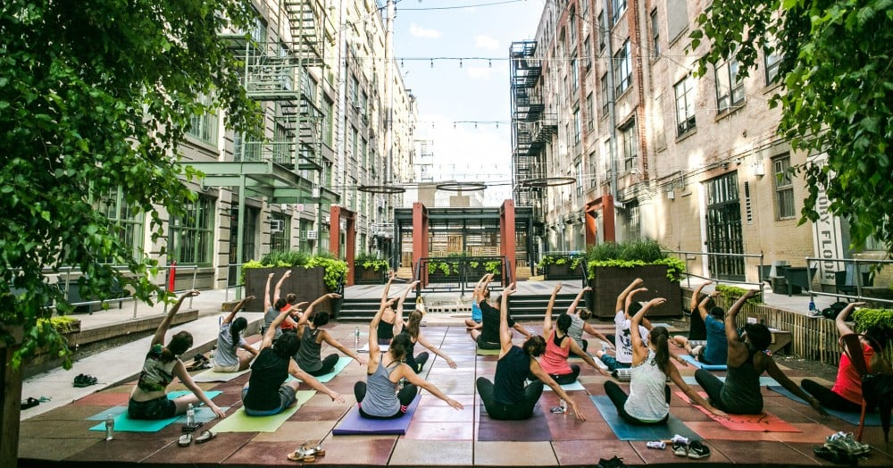

About Us:
SooYoga is an outdoor yoga classes, blending the safety and distance of virtual classes with the
communal and energy-building nature of inperson classes. During Sooyoga classes, you can stay at a
safe distance from others while practicing, free of enclosed spaces, while enjoying nature and an
inperson connection.
Relaxing outdoor environments tend to make you feel better by releasing endorphins to the brain.
Also having the added stimulation of terrain such as grass and sand only helps you feel more
connected to your environment.
We organise 3 outside sections per week with our professional yoga instructors ready to help you
relax your body, soul and mind outdoors with the nature.